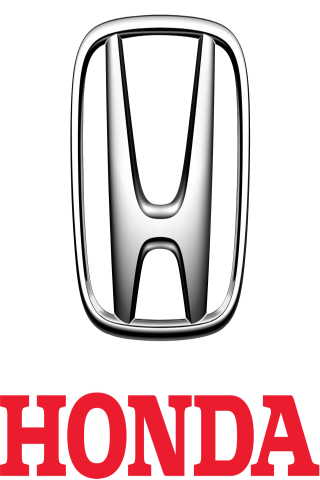
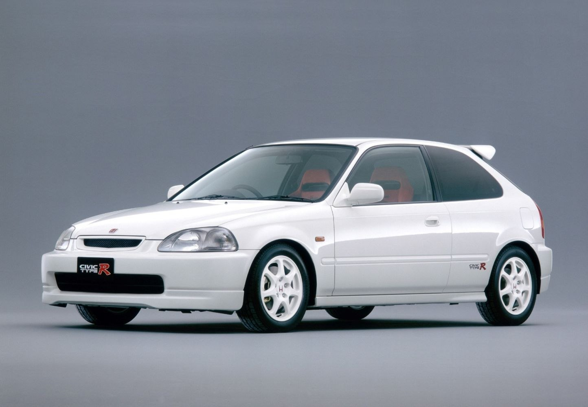

Honda Civic Ek9 TypeR

O Honda Civic EK9 Type R pré-facelift, produzido entre 1995 e 1998, é a primeira geração do lendário Civic a receber a designação “Type R” da Honda, representando a filosofia mais pura da marca focada em desempenho, leveza e condução desportiva. Este modelo foi desenvolvido exclusivamente para o mercado japonês (JDM) e baseia-se no Civic hatchback de sexta geração, mas com uma série de melhorias profundas em motor, chassis e dinâmica que o distinguem completamente das versões normais do EK. O coração do EK9 é o motor B16B, um 1.6 litros atmosférico DOHC VTEC, considerado uma das evoluções mais extremas da família B-series. Este motor debita cerca de 185 cavalos de potência às 8.200 rpm e aproximadamente 160 Nm de binário às 7.500 rpm, com um corte de rotação que ronda as 8.400 rpm. Apesar da cilindrada relativamente pequena, o motor foi afinado de forma muito agressiva, com melhorias no fluxo da cabeça, componentes internos reforçados e uma taxa de compressão elevada de 10.8:1, permitindo uma resposta extremamente rápida e uma entrega de potência linear e explosiva em altas rotações. O resultado é um carro capaz de acelerar dos 0 aos 100 km/h em cerca de 6,6 segundos e atingir uma velocidade máxima próxima dos 225 km/h. Em termos de chassis, o EK9 Type R pré-facelift foi profundamente trabalhado pela Honda para reduzir peso e aumentar a rigidez estrutural. O peso total do veículo ronda os 1.050 kg, o que contribui significativamente para o seu comportamento ágil e ágil em curva. A carroçaria recebeu reforços estruturais adicionais através de soldaduras suplementares, aumentando a rigidez torsional e melhorando a precisão da condução. O sistema de suspensão utiliza triângulos duplos tanto à frente como atrás, uma solução avançada para a época, proporcionando um comportamento muito equilibrado e uma excelente capacidade de aderência em curva. O carro também vem equipado de fábrica com um diferencial autoblocante helicoidal (LSD), que melhora a tração em aceleração e saída de curvas. A transmissão é manual de cinco velocidades com relações curtas, concebida para manter o motor sempre na faixa ideal de rotações, reforçando a sensação de ligação direta entre o condutor e o carro. A direção hidráulica é extremamente comunicativa, oferecendo um feedback preciso da estrada, algo muito valorizado nos hot hatch clássicos. No que toca ao design exterior, a versão pré-facelift distingue-se por um visual mais simples e “limpo” em comparação com o facelift posterior. Inclui faróis tradicionais, piscas traseiros âmbar e para-choques menos agressivos, mantendo ainda assim elementos característicos do Type R como o spoiler traseiro, jantes brancas de 15 polegadas, emblemas Honda vermelhos e pequenas extensões aerodinâmicas. O conjunto resulta num visual discreto mas imediatamente reconhecível para entusiastas. O interior do EK9 segue a mesma filosofia de simplicidade e foco na performance. O isolamento acústico foi reduzido para poupar peso, o que aumenta o ruído de funcionamento mas intensifica a experiência de condução. Destacam-se os bancos desportivos Recaro vermelhos, volante Momo, manete de velocidades em titânio e detalhes interiores em vermelho, criando um ambiente claramente orientado para competição. Tudo no interior foi pensado para funcionalidade e leveza, sem elementos supérfluos de conforto. No geral, o Honda Civic EK9 Type R pré-facelift é considerado um dos hot hatches atmosféricos mais icónicos de sempre. A sua combinação de baixo peso, motor de alta rotação, chassis extremamente equilibrado e ligação direta com o condutor tornou-o um modelo de referência na história automóvel. Ainda hoje é muito valorizado por entusiastas e colecionadores, tanto pela sua pureza mecânica como pelo facto de ser o primeiro verdadeiro Type R da Honda, estabelecendo a base para todos os modelos que vieram depois. |